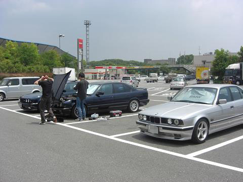 Ｍゴローは、午後から参加しました。 １２時過ぎにSAに着くと既に始まっていました。
|
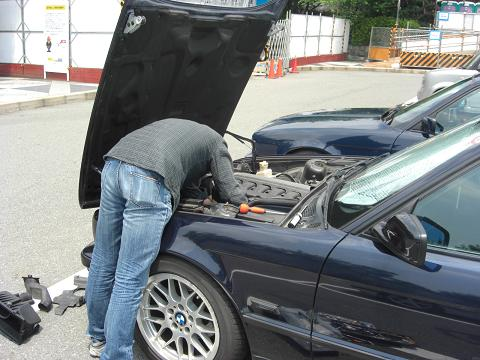 何をしてるかというと・・・ アイドルバルブ周りのホースの交換のようです。 エンジンのカバーを外さずに、アイドルバルブをホースごと抜き取る作戦だとか＾＾ なかなか外れず悪戦苦闘中のＤＤさん。
|
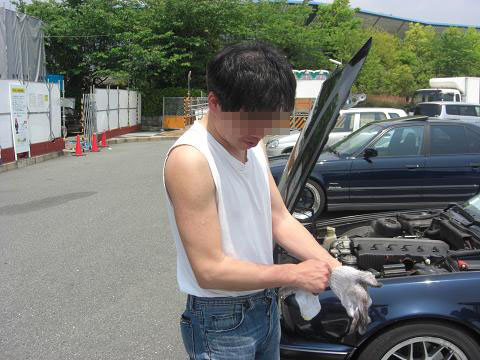 「よし！本気になるか！」とおもむろに上着を脱いだＤＤさん;ﾟoﾟ) 本気になったとたんアイドルバルブが取れました（笑
|
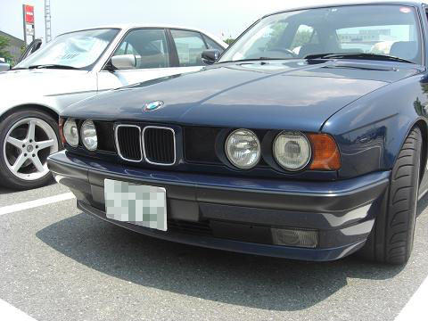 ボーベンさん登場！ 網グリル、見る角度によって見え方が違うのでおもしろい＾＾
|
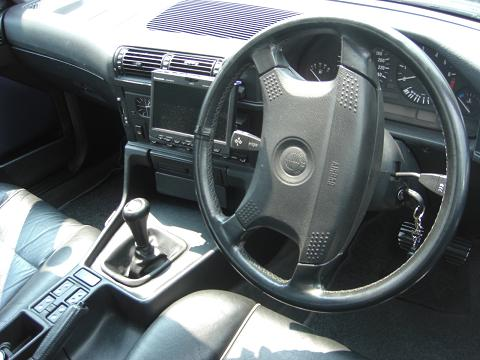 Ｍゴロー号をＭＴ化したものの、ＭＴのE34を運転したことが無かったので、、 お二方の「乗っていいよっ！」に甘えてboven7号とsiger号に乗せていただきました＾＾ まずは、boven7号＾＾/ １速、２速のギクシャク感がなく ギアのつながりがとてもスムーズで予想に反してとても乗りやすい！ ２速でちょっと踏むと、、凄い加速します（笑
|
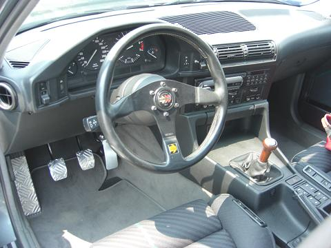 つづいてsiger号＾＾/ siger号はALPINA B103.5/１です。 535iと同じM30系なのでワクワク(*^0^*) まず乗って気づいたのが回転の上がり方のスムーズさ！ タコメーターの針が、同じＭ３０系と思えないぐらいピョンピョン跳ね上がります。 それと、、Ｍゴロー号はGETRAGの280ですが、siger号はGETRAG260 この２つのＭＴのシフトフィールの違いには驚いた！ その違いは、シフトチェンジ時のフィーリングで。。 簡単に書くと、、280は「グニャ」260は「カチッ」って感じです。（言葉で伝えるのは難しい。。（笑））
|
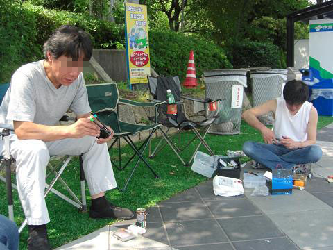 木陰で小細工中なsigerさんとDDさん sigerさんは、シートのスイッチ修理 DDさんはといさんのキーレスを改造＾＾/
|
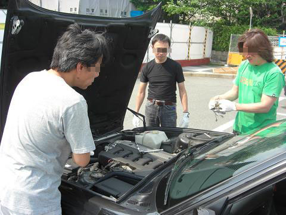 そこにFANATICさんとゴンザレスさんも到着し、FANATIC号のプラグ交換 久しぶりのメンテオフ、FANATICさんもこの他にたくさんのメニューが＾＾/
|
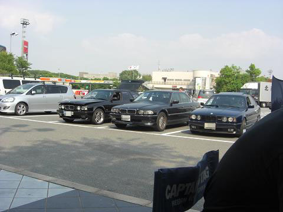 540trからE38 740iに乗り換えたJGさん、ぼんびーさんも登場＾＾/
|
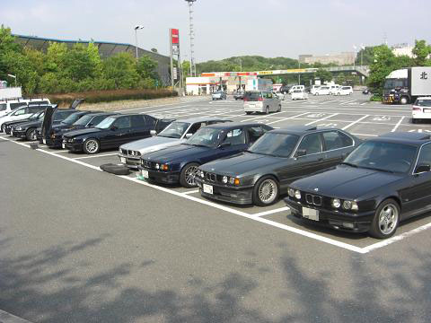 全景写真です。 右からゴンザレスさん、sigerさん、boven7さん、といさん、 DDさん、ぼんびーさん、Mゴロー、JGさん、FANAさんの愛車 天気も良く絶好のメンテ日和！ちょっと暑過ぎでしたが＾＾； |
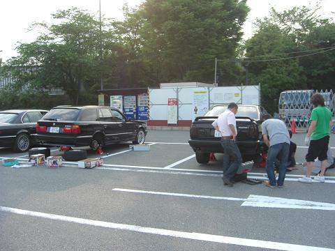 ってことで、日が傾きだしたころに再び作業開始です。
|
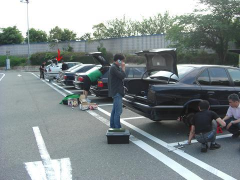 FANATIC号とDD号をジャッキUPしてるその奥では、、 540iのりゅうじさんの足回りを、ばらしてボーベンさんとりゅうじさんが異音のチェック＾＾/ で、手前の２台はナニを交換するかというと。
|
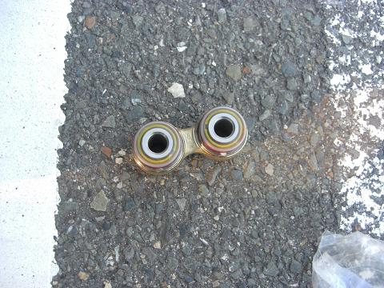 ピットマンアームです＾＾ 安く入手できるのは、半年も持たずダメになってしまうようで。。 FANAさんは純正品を入手！
|
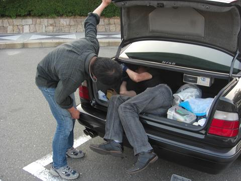 DD号とFANA号のピットマンアームの交換を終えたゴンザレスさんが トランクダンパーの交換を＾＾
|
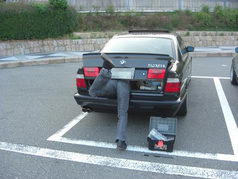 お約束、トランクに食べられるゴンザレスさん（笑 |
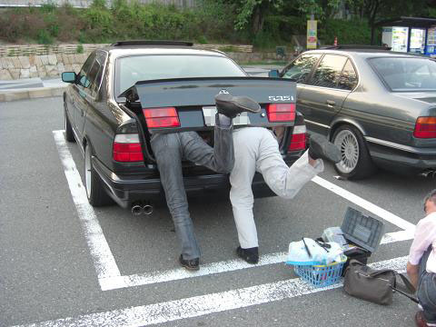 つづいて、某氏の指示で犠牲になったゴンさんとsigerさん、２人同時は新鮮でした（笑 |
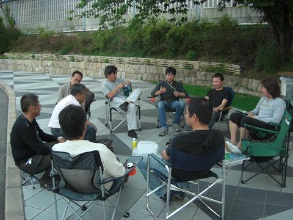 この日、予定していたメニューを全てこなし、一息つくみなさん＾＾ |
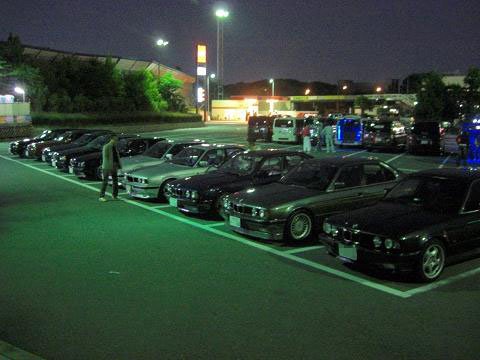 この日は、KAZEさんの定例夜オフ開催の日なので、 そのまま夜オフへ突入となりました＾＾/
|
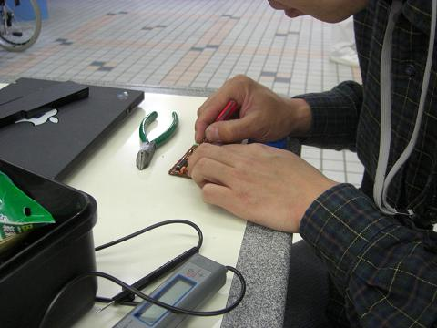 MT化してからトランスプログラムが出てしまうので、、 これを消す為に、DDさんにCCMの加工をしていただきましたm(__)m
|